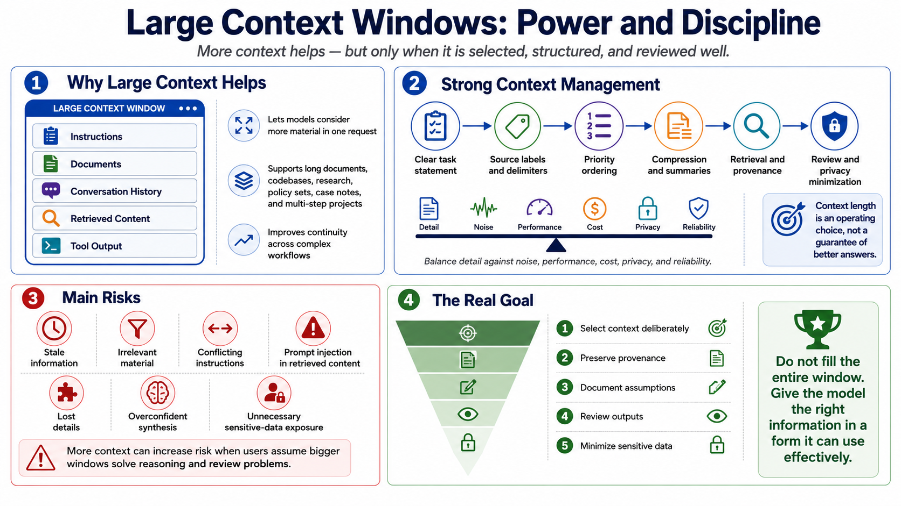

Course Summary and Key Takeaways
Connecting to LMS... Progress: in progress

Narration
Large context windows are powerful because they let models consider more instructions, source material, conversation history, retrieved content, and tool output during a request. They enable workflows involving long documents, codebases, research collections, policy sets, case notes, and multi-step projects. But large context is not the same as reliable context.
Strong context management balances detail against noise, performance, cost, privacy, and reliability. It uses clear task statements, source labels, delimiters, priority ordering, compression, summaries, retrieval, provenance, and review. It treats context length as an operating choice, not a guarantee of better answers. Sometimes the best prompt is shorter, sharper, and better organized.
The main risks are stale information, irrelevant material, conflicting instructions, prompt injection in retrieved content, lost details, overconfident synthesis, and unnecessary exposure of sensitive data. These risks grow when users assume that more context automatically solves reasoning and review problems. Large windows reduce some friction, but they do not remove the need for engineering judgement.
The goal is not to fill the entire window. The goal is to give the model the right information in a form it can use effectively. When teams select context deliberately, preserve provenance, document assumptions, review outputs, and minimize sensitive data, large context windows become a practical tool for deeper, more continuous work.